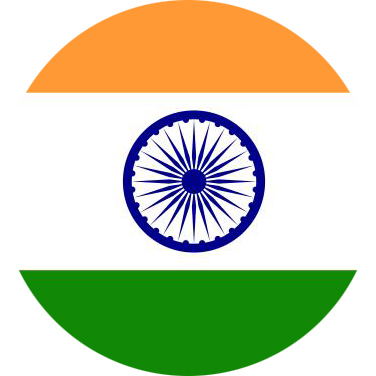
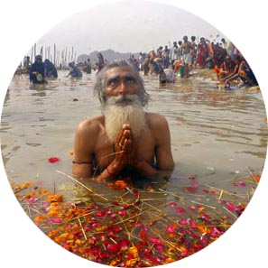
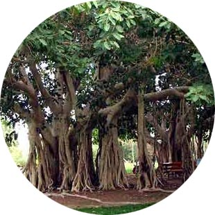

"At the stroke of the Midnight hour when the world sleeps, India will awake to life and freedom"

-
Jawaharlal Nehru the first Prime Minister of India On the eve of Indian independence in Aug 15 1947 in the Indian Parliament
